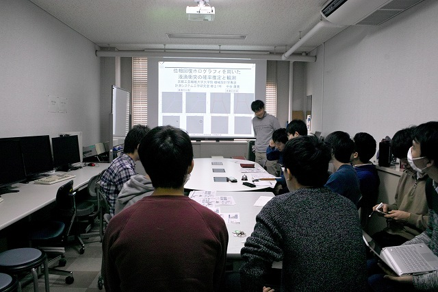
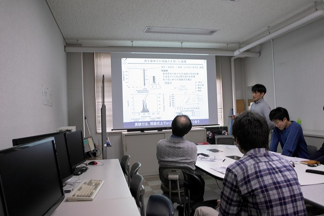
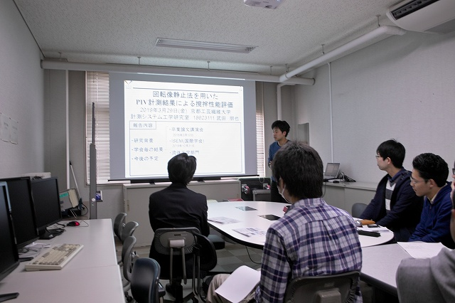
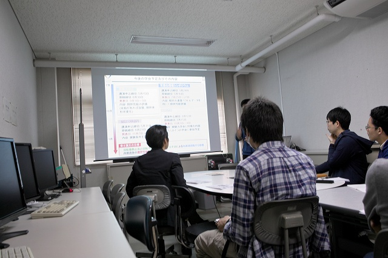
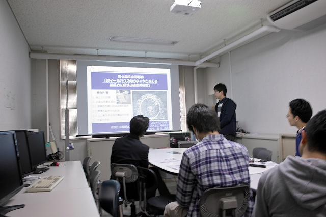

・ 中間発表 (H31.03.29)
4年前
までやっていて、昨年から研究室独自に副査の先生方にお願いをして中間発表をしています。 審査の1年前に研究内容を聴いていただけると、議論を反映することができます。去年は5名でしたが今年は3名です。

副査の澤田先生でN谷さんから

研究実績は十分に積んできました

T田さんのわかりやすいプレゼン

副査は山川先生

最後はT中さん
BACK
© Measurement System Laboratory, Kyoto Institute of Technology.